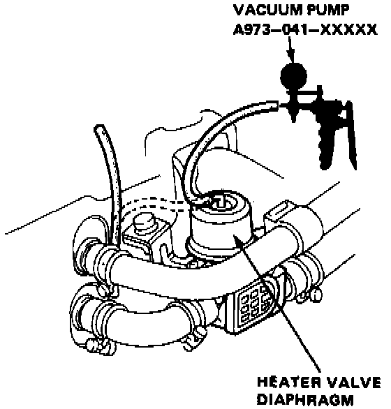

Heater Control Valve: Testing and Inspection
HEATER VALVE CONTROL DIAPHRAGM TEST
1. Disconnect the vacuum hose from the heater valve control diaphragm and connect a vacuum pump to the diaphragm.
2. Apply vacuum and make sure that the diaphragm rod moves smoothly and vacuum remains steady.
- If the rod does not move smoothly or vacuum does not remain steady, replace the diaphragm.